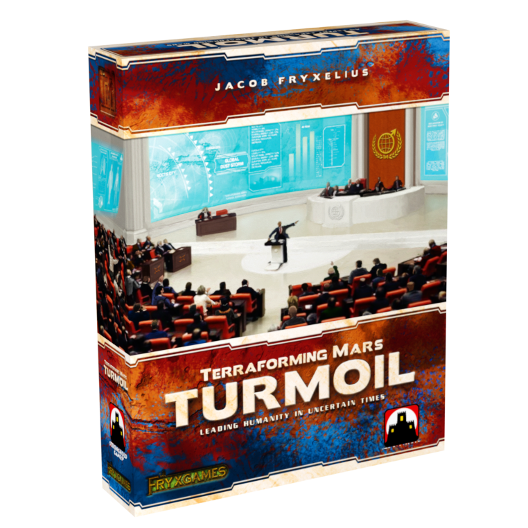

Terraforming Mars: Turmoil
Jacob Fryxelius · 2019 · Expansion for Terraforming Mars

Turmoil at a Glance
Turmoil moves Martian politics from the background into a recurring public system. Players send delegates to six parties, compete to determine the next ruling government, and use influence to prepare for Global Events that are revealed three generations before they resolve. Every party brings a one-time ruling bonus and an active policy, while every generation also ends with a revision that costs each player 1 TR.
In quality, Turmoil earns a B tier. Its political layer is thematic and tied closely to the base economy; tags, production, resources, tile placement, card timing, and TR all matter to the committee. It also adds a second public optimization layer and a long recurring procedure. The political decisions can be valuable at the right table, but they do not consistently justify that much extra time and attention as a default part of the game.
The enable recommendation is Include as Needed. Experienced three- or four-player groups that actively want more public interaction may value the module highly. Teaching games, most two-player sessions, time-limited tables, and players who prefer the original engine-building focus are better served without it.
This review covers the original 2019 box, including its 31 Global Events, 16 project cards, and five corporations. The separate Kickstarter Promo Pack and later cross-expansion material are outside its scope.
Politics Inside the Existing Engine
The committee reads directly from the engines players have already built. Ruling bonuses count tags and production, while party policies change the value of titanium, energy production, and heat production, as well as the returns from tile placement, TR gains, card draw, and greeneries. The new project cards can also depend on a ruling party or a player's delegates. Base-game engines determine which political outcomes matter, and political outcomes then change what those engines should do next.
This two-way influence is the expansion's strongest achievement. Party dominance can change which card should be played now, whether a parameter should be advanced, and whether an opponent's next generation must be disrupted. Turmoil shifts the center of attention more than the other major expansions, but it does so by entering existing decisions rather than replacing them with an unrelated economy.
Meaningful Decisions, Repeated Administration
Each player receives one free lobby delegate per generation, so political participation is not reserved for the richest engine. Additional delegates cost 5 M€, turning control into a real opportunity cost. A delegate can contribute to party dominance, become party leader or chairman, and add influence to an approaching event. The same piece therefore carries several related forms of value.
Open majorities also create a limitation. Players can wait to see where the contest settles and then add a late delegate, so earlier investment may simply raise the price of a result decided by action order or the last player willing to spend. At three or four players, competing interests and temporary alignment give this bidding more texture. It is still not equally deep every generation: supporting the party that matches one's own engine is often obvious, and blocking another player may depend more on table alignment than on a difficult internal choice.
The procedural cost never disappears. Every generation adds TR revision, Global Event resolution, a new ruling party and policy, a ruling bonus, delegate returns, a new chairman, dominance changes, neutral-delegate movement, and lobby refill. Losing 1 TR is a clear way to pay for the committee's generous bonuses, but it is also blunt: the expansion creates income and then charges the whole table through lower score and future money production. Together with extra lobbying actions and constant revaluation, this makes an already long game meaningfully longer.
Global Events: Forecastable, But Limited In Long-Term Variety
Showing Global Events three generations in advance is a good decision. Players are not surprised by a card that immediately rewards or punishes an established engine; they can adjust card timing, production, tags, tiles, or political influence before it resolves. The neutral delegates placed by the event queue also connect future conditions to the current committee rather than leaving events as isolated modifiers.
The advance warning improves players' ability to respond, but the event order mainly changes short-term values and action timing. It does not create many new long-term strategic families. The six party policies remain fixed, and a familiar group will gradually learn their recurring patterns. Terraforming Mars already has a vast card and corporation space; Turmoil adds tactical variation rather than a comparable new ceiling of replay.
Visibility also limits surprise without removing luck. Many events count tags, production, resources, or tiles that were built over several generations and cannot be efficiently redirected in time. A player can prepare for the event, but may still be rewarded or punished largely because the random queue happened to match an engine that was already committed. The result can create useful adaptation, yet part of the variance remains noise rather than a new decision route.
Two Players: Less Politics, More Random Influence
The committee is most convincing when three or four players bring different interests to the same vote. Temporary alignment, shared denial, and uncertainty about who will pay for the final delegate give the political system room to work. With two players, much of that structure collapses into a direct counter-bid: one player supports a party, the other either matches the expense or lets it pass.
Neutral delegates also occupy a much larger share of the political map at two players. Because the random Global Event sequence determines where those delegates enter, chance can preload party dominance before either player makes a political choice. Spending 5 M€ to correct that result technically preserves counterplay, but paying to recover control from a random setup is not the same as gaining meaningful strategic variety.
The full administration remains almost unchanged even though the political return is smaller. Two-player Turmoil therefore combines weaker social politics, more influential random delegates, and nearly the same recurring procedure. The module fits two-player sessions materially worse and is normally best left out.
A Strong Theme And Uneven Secondary Content
Political factions, social movements, industrial policy, and natural disasters are a convincing extension of a growing Martian civilization. The party identities make their economic effects easier to understand, while the event horizon gives the world a sense of motion beyond the corporations' private engines. Theme is a clear strength, and it helps the larger system remain legible.
The 16 project cards generally integrate well because party requirements, delegates, and influence connect them to both the committee and the main deck. The five corporations are less consistent as a set: their strength and usefulness depend more heavily on player count, ending pace, and enabled modules. This unevenness matters, but it remains secondary to the time and attention demanded by the complete political system in every session.
Final Recommendation
Turmoil is a real positive for the right table. In an experienced three- or four-player game, it creates public stakes, political timing, and a forecast horizon that the base game does not otherwise provide. Groups that want stronger interaction can use it to change the character of Terraforming Mars without abandoning the original economy.
It is nevertheless too bulky to become a default recommendation. The added procedure, longer session, constant revaluation, and weaker two-player structure are not occasional flaws; they are the price of using the module every time. New players should learn the base system first, two-player groups should normally omit it, and experienced groups should add it only when the table actively wants a longer and more political game.
The final judgment is B tier and Include as Needed. Turmoil has coherent ideas and strong integration, but its recurring procedures consume more time and attention than the added decisions consistently justify. Its ambitions are clear, yet the full political system remains too heavy for a default module.